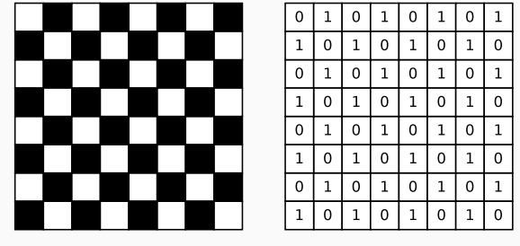
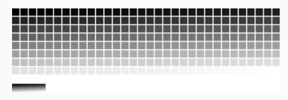
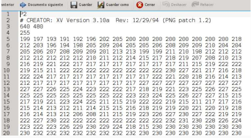
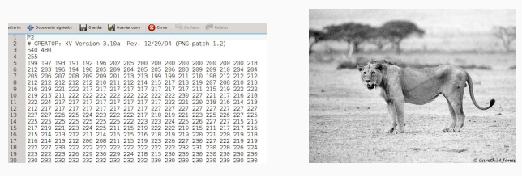
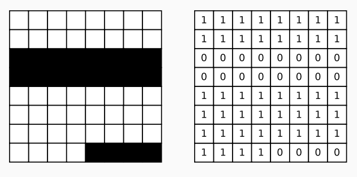

Partamos con las imagenes.
En general, trabajamos en los computadores con
interfaces visuales:
Y obviamente, toda esa información visual, debemos ser capaces de representarla mediante bits!
Consideremos el siguiente ejemplo, de una imagen con solo doscolores (blanco y negro). Podemos utilizar 1 para negro y 0 para blanco:
Naturalmente queremos ocupar más colores que solo blanco y negro. ¿Cómo lo hacemos?
Por ej. ¿Cuántos numero podemos representar con 8 bits? 256
La matriz sigue siendo la misma, pero ahora, en cada posición se almacena un número en el rango (0-255).
¿Qué representa esto?
Formato de imagen en ASCII plano, que nos permite ver los valores de una imagen. Por ejemplo:
En linux, pueden jugar con la aplicacion Gimp para convertir entre formatos de imagen, incluido PGM.
¿Y el color? - Debemos definir modelos que nos permitan trabajar con color (más bits).
El principal problema de los mapas de bits es el espacio que ocupan (Leon es 640x480 y necesita 1Mb de espacio) Solución: “Comprimir” la imagen
Como su nombre lo dice, son métodos en los que se pierde información
Funciona igual que las imágenes:
Para la conversion tomo muestras